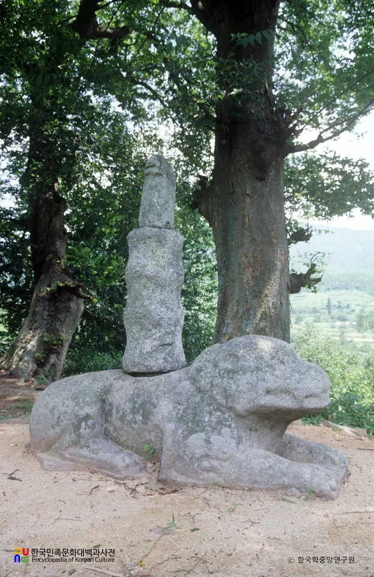
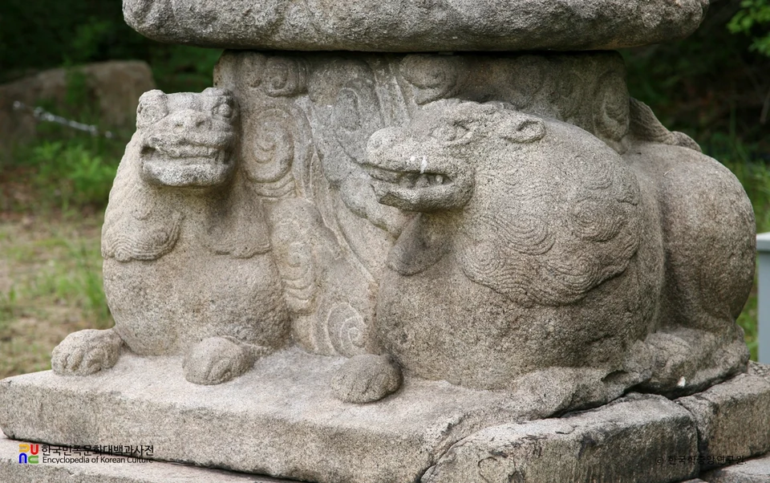
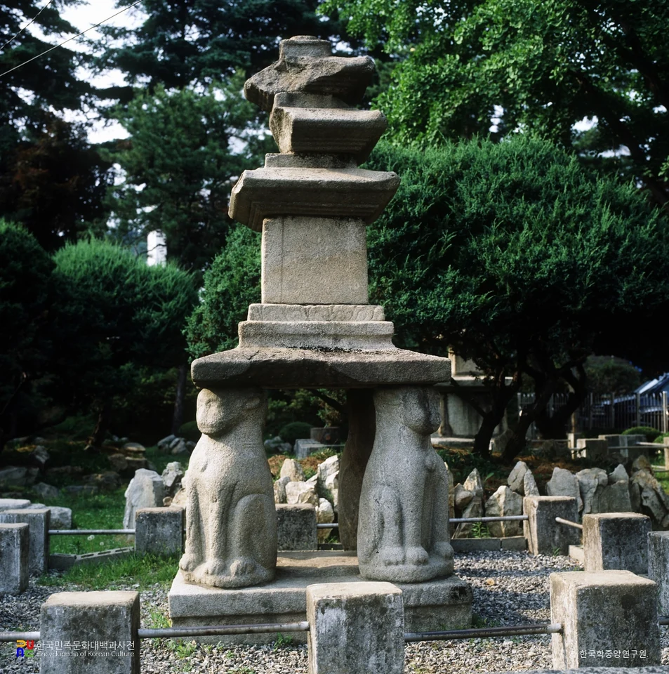
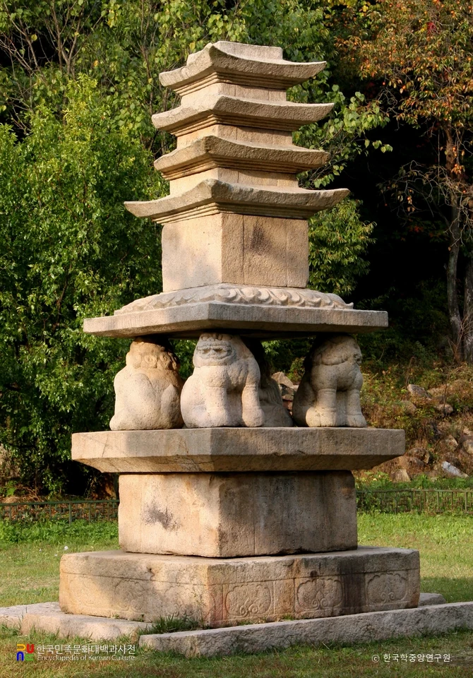
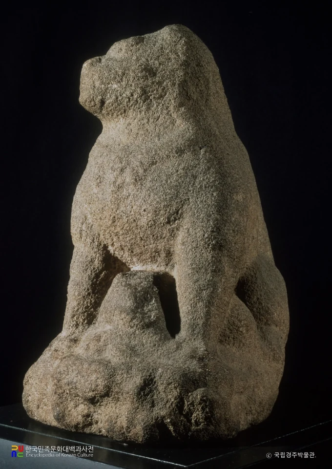
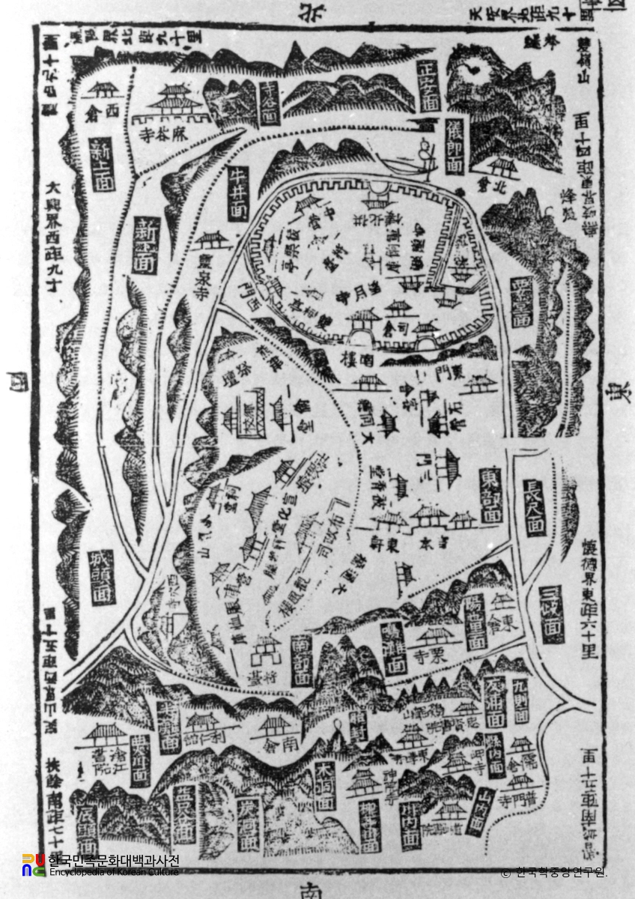
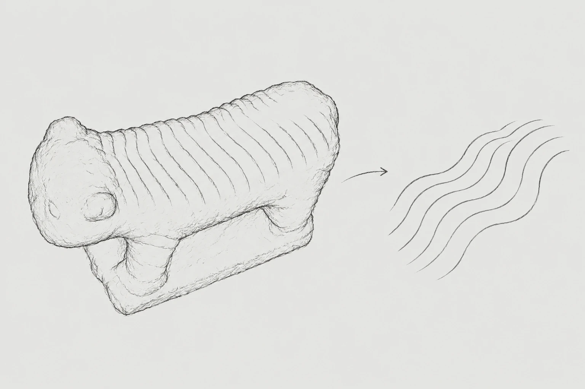
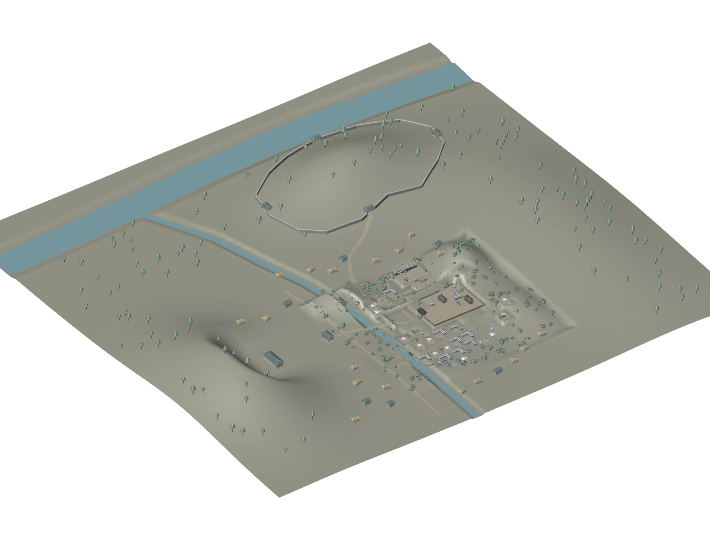

01 · OBSERVATION & RESEARCH
문양에서 시작한
관찰과 조사
관찰 — 문양과 수치
두 석사자의 문양과 치수
| 항목 | 수사자 | 암사자 |
|---|---|---|
| 몸 길이 | 104.6 cm | 120.1 cm |
| 얼굴 길이 | 36.8 cm | 34.1 cm |
| 얼굴 너비 | 37.6 cm | 34.5 cm |
| 정수리 갈기 수 | 11개 | 8개 |
| 한쪽 수염 수 | 4개 | 8개 |
| 수염 평균 길이 | 9.5 cm | 6.5 cm |
| 등 줄기 수 | 18개 | 16개 |
| 코 길이 | 10.2 cm | 15.4 cm |
| 입 크기 | 15.9 cm | 21.9 cm |
| 이빨 크기 | 1.8 cm | 1.2 cm |
| 이빨 수 | 7개 | 9개 |
팀 제공 비교 기록 · 2026.10.11 · ‘수사자·암사자’는 Index에서 사용하는 구분명입니다.
문헌 속 석사자
봉황동 석사자를 설명하는 자료
봉황동 석사자는 화강석으로 만든 사자상 두 점으로, 제작 시기는 고려시대로 추정됩니다. 2008년 조사에서는 미지정 전통자원으로 분류했으며, 소장처는 공주대학교 박물관으로 기록되어 있습니다.[1][2]
문이나 계단 앞에 두는 건축물의 부속 장식으로 설명되며, 사악한 기운을 막는 벽사의 의미와 관련된 것으로 해석됩니다.[2]
사자의 상징과 쓰임
불교 미술에서 사자는 수호의 의미를 지니며 석탑, 승탑, 불상 대좌 등에 나타납니다.[3]
다른 석사자와의 비교
- 김제 귀신사 석수
- 배를 땅에 대고 누운 자세의 고려시대 사자상으로, 등 위에 돌기둥이 남아 있습니다. 이 구조로 보아 석등을 받치는 부재였을 것으로 추정됩니다.[4]

김제 귀신사 석수 우측면
사진 · 한국학중앙연구원 / 한국민족문화대백과사전
공공누리 제1유형 - 여주 고달사지 쌍사자 석등
- 웅크린 두 사자의 등 위에 구름 모양의 받침을 올린 석등입니다. 조각 수법을 근거로 고려 전기인 10세기경에 제작된 것으로 추정됩니다.[5]

여주 고달사지 쌍사자 석등 쌍사자상
사진 · 한국학중앙연구원 / 한국민족문화대백과사전
공공누리 제1유형 - 홍천 괘석리 사사자 삼층석탑
- 고려 전기로 추정되는 석탑으로, 상층 기단의 네 모서리에 앉은 사자가 윗돌을 받칩니다. 앞다리를 펴고 뒷다리를 굽힌 자세입니다.[10]

홍천 괘석리 사사자삼층석탑
사진 · 한국학중앙연구원 / 한국민족문화대백과사전
공공누리 제1유형 - 제천 사자빈신사지 사사자 구층석탑
- 기단의 네 사자가 탑을 받치는 구조입니다. 기단에 새겨진 명문을 통해 고려 현종 13년인 1022년에 조성된 사실을 확인할 수 있습니다.[11]

제천 사자빈신사지 사사자 구층석탑 정측면
사진 · 한국학중앙연구원 / 한국민족문화대백과사전
공공누리 제1유형 - 의성 관덕동 석사자
- 통일신라 석탑에 배치되었던 사자상으로, 암사자로 설명되는 개체의 배 아래에 새끼 사자가 표현되어 있습니다. 두 점 모두 마모가 심합니다.[12]

의성 관덕동 석사자
사진 · 국립경주박물관 / 한국민족문화대백과사전
공공누리 제0유형
석사자와 공주목
고려시대 추정 석사자와 조선시대 공주객사
봉황동 석사자는 고려시대 작품으로 추정되며, 조선시대 공주객사 터에 있었던 것으로 기록되어 있습니다.[1][2] 본래의 설치 장소와 객사 터에 놓인 시기는 확인되지 않습니다.
구 공주의료원 인근에서 발견되었다는 기록은 있지만, 발견 연도와 공주대학교 박물관으로 옮겨진 시기와 경로는 확인하지 못했습니다.[13][2]
공주객사터와 오늘의 장소
옛 공주객사 터는 현재 중동초등학교 자리로, 공주목사가 집무하던 관아 터는 옛 공주의료원 뒤쪽으로 기록되어 있습니다.[7]
객사의 역할
객사는 국왕을 상징하는 전패 등을 모시고 사신과 관료가 머물던 곳입니다.[6]
옛 지도 속 공주목
『공산지』의 공주지도에는 산줄기와 하천, 관아와 마을의 위치가 함께 그려져 있습니다.[9] 1872년 「공주목지도」도 참고해 당시 공주목의 공간 배치를 살폈습니다.[8]

한국학중앙연구원 · 공공누리 제1유형
조사에서 기획으로

문양 
시각적 형태 
마을의 모양
문헌만으로는 봉황동 석사자가 처음 놓였던 곳과 쓰임을 자세히 알기 어려웠습니다. 그래서 저희는 스캔에서 찾은 무늬와 형태를 바탕으로 이야기를 풀어 가기로 했습니다. 굽이치는 선에서 길과 산등성이를 떠올렸고, 공주목의 옛 지도와 객사터 기록을 참고해 이야기의 배경이 될 마을을 구성했습니다. 여기에 장사꾼과 찬모처럼 마을에 살았을 법한 인물들을 더해, 두 사자에 관한 소문을 전하도록 했습니다.
참고문헌
- [1]한상욱·이호정. (2008). 『충청남도 역사도시의 역사문화자원 실태분석 및 활용방안』. 충남발전연구원, 기본연구 2008-09, 부록 목록 131번, 70쪽.
- [2]이왕기. (게시연도 미상). 「봉황동 석사자」. 『디지털공주문화대전』, 한국학중앙연구원.
- [3]박경식. (웹 게시연도 미상). 「사자」. 『한국문화사』 18권, 제1장 3절. 국사편찬위원회 우리역사넷.
- [4]주수완. (2017, 2024 수정). 「귀신사 석수」. 『한국민족문화대백과사전』, 한국학중앙연구원.
- [5]국가유산청. (게시연도 미상). 「여주 고달사지 쌍사자 석등」. 『국가유산 디지털 서비스』.
- [6]한국학중앙연구원. (2022, 2024 수정). 「객사」. 『한국민족문화대백과사전』.
- [7]공주시. (게시연도 미상). 「지명유래: 중학동(중동) — 객사터」. 공주시청.
- [8]충청도각군 편. (1872). 「공주목지도」. 채색 필사본, 奎10405. 서울대학교 규장각한국학연구원 소장. 「1872년 지방지도」의 공주목지도 해제 함께 참조.
- [9]김전배. (1995, 2023 수정). 「공산지」. 『한국민족문화대백과사전』, 한국학중앙연구원. 수록 이미지 「공산지 / 공주지도」.
- [10]정영호. (1995, 2023 수정). 「홍천 괘석리 사사자 삼층석탑」. 『한국민족문화대백과사전』, 한국학중앙연구원.
- [11]국가유산청. (게시연도 미상). 「제천 사자빈신사지 사사자 구층석탑」. 『국가유산 디지털 서비스』. 조성 연대와 명문은 국립문화유산연구원 금석문 자료 함께 참조.
- [12]한국학중앙연구원. (1995, 2023 수정). 「의성 관덕동 석사자」. 『한국민족문화대백과사전』.
- [13]공주시. (2021). 『공주시지 2021』 제6권 문화유산. 제3편 제9장 「기타유적」, 「봉황동 석사자」, 502–503쪽.